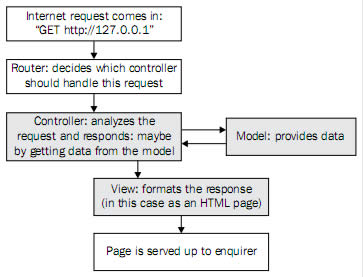
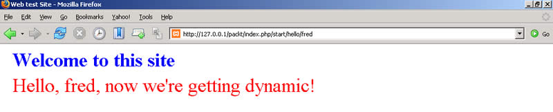
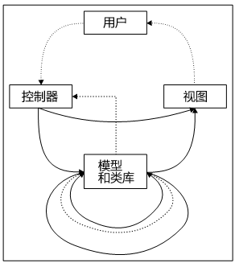

第三章 分析网站结构
既然我们已经安装了 CI，那我们就开始了解它是如何工作的吧。
读者已经知道 CI 实现了模型―视图―控制器（MVC）模式。这是管理文件和网站的方法，如果你喜欢的话你可以把他们合理的分成各个小模块，而不是把代码放在一起。
这一章，我们将会对 MVC 理论做个简短的介绍，然后再介绍 CI 的 MVC 实现方式。特别地，要了解那些文件夹是如何相互交换信息的？网站结构是怎样的？以及 CI 是如何运作的？
这一章将会介绍：
- MVC 如何架构一个动态网站
- CI 如何分析一个 Internet 请求，以及如何调配指定的代码来处理它
- 这些指定的代码如何编制
- CodeIgniter 语法规则
- 在 CI 中，你可以找到或自己编写各种文件和类
- 如何使用 URL 传递参数给控制器
- 如何编写更好的视图并把动态内容传递给它们
- 如何返回信息给上网者
- 文件和类如何传递信息和相互调用
- 辅助函数和类库文件有什么用
- 有助于网站设计的一些特别提示
3.1 MVC―到底有什么用？
MVC 指的是一个动态网站的组织方法。该设计模式是 1979 年由挪威人 Trygve Reenskaug 首次提出来的，这里是一些概要：
- 模型是包含数据的对象，他们与数据库交互，对这些数据进行存取，使其在不同的阶段包含不同的值，不同的值代表了不同的状态，具有特定的含意。
- 视图显示模型的状态，他们负责显示数据给使用者。（虽然他们通常是 HTML 视图，但是，他们可能是任何形式的接口。比如 PDA 屏幕或 WAP 手机屏幕）
- 控制器用来改变模型的状态，他们操作模型，提供动态的数据给视图。
CI 中模型、视图和控制器文件都有自己的文件夹。文件本身是 .php 文件，通常以遵循某种命名规则的类的形式呈现。
CI 帮助你遵循 MVC 模式，使你更有效地组织代码。CI允许你有最大的灵活性，你可以获得MVC结构的所有好处。
当你编程的时候，试着始终用MVC来思考问题。尽可能确保你的“视图”聚焦于显示内容，“控制器”纯粹地用来控制应用程序流。把应用程序逻辑保留在数据模型和数据库中。
这样，如果你决定开发新的视图，你不必在任何一个控制器或模型中修改代码。如果你要更改“商业逻辑”，那么你只需要在模型中修改代码。
另一方面，你必须认识到，MVC只是用来帮助你的一种设计方式，而不是用来约束你的。MVC可以有不同的实现方式。CI的论坛中包含许多如何“正确合理”的实现MVC的方式。（我应该在控制器部分实现数据库查询功能吗？我能直接从视图发送数据到模型吗？或者我必须通过控制器来访问？）
与其寻找理论上的正确方式，不如遵循两项有用的原则。这些在CI用户手册的设计和架构目标一节中有相关描述：
- 松耦合：耦合是指一个系统的组件之间的相关程度。越少的组件相互依赖，那么这个系统的重用性和灵活性就越好。我们的目标是一个非常松耦合的系统。
- 组件专一性：专一是指组件有一个非常小的专注目标。在CodeIgniter里，为了达到最大的用途，每个类和它的功能都是高度自治的。
这些是Rick Ellis开发CI要实现的目标，并且它们对于你的网站也是很好的目标。实现这些目标之后，你在代码中使用这些类时就不需要担心有什么副作用了。
CI做到了这一点，我的经验是一个站点中的“松耦合”辅助函数和类库可以很容易的应用到其他站点中，这节省了很多开发时间。
因此，如果你的控制器直接操作数据库，或你在模型中调用视图，CI代码将会以适当的方式工作―通常没有技术上的问题―但是从MVC理论来看这样似乎是“不正确的”。别担心，如果喜欢就这样做吧！
3.2 CI 的网站结构：控制器和视图
你的整个CI网站是动态的。就是，可能找不到制作“静态”网页的简单HTML代码。（如果需要你可以添加，但是他们将会在CI框架之外。）那么，你的网站到底在哪里？
当我们安装CI的时候，我们注意到application文件夹中包括名为models、views和controllers的子文件夹。每个CI网站都包含这三个类型的文件。
让我们看看内部细节。
再次强调我们并不处理静态网页和对应的URL，我们将会给你看CI如何分析“URL”请求和如何响应它。首先，考虑一个正常的Internet请求。用户建立一个连接到你的网站： www.example.com，然后经过socket发出一个如下的HTTP请求：
GET /folder/file.html HTTP/1.0
GET是请求的类型，HTTP/1.0指定HTTP协议的版本，中间是相对路径和文件名。但是在你的网站上，找不到简单的静态HTML文件。取代它的是，所有的连入请求被index.php文件拦截并进行处理。
如果用户正在以正确的URL请求你网站上的页面―通常是单击网页上的一个超链接―请求一般看起来像这样：
GET /index.php/tests/showall HTTP/1.0
如果使用者不知道具体的URL，CI会设定一个默认页面（我们一会儿就告诉你怎么做。）。CI的处理步骤是：

一个从Internet到你的网站根文件夹的请求被index.php文件拦截，作用就像一个“路由器”。换句话说，它调用一个“控制器”，然后返回一个“视图”。
“路由器”怎么知道调用哪个控制器？就像我们已经见到的，有时候请求本身包含的信息会告诉它调用哪个控制器。举例来说，如果请求说：
GET http://127.0.0.1/index.php/welcome/index
并且如果你有一个控制器叫做welcome，这就是被调用的控制器。
3.2.1 Welcome 控制器
所以，让我们看welcome控制器。它被存放在如下路径：system/application/controllers/welcome.php。它的内容是这样的：

<?php class Welcome extends Controller { function Welcome() { parent::Controller(); } function index() { $this->load->view('welcome_message'); } } ?>
文件的第二行开始是一个类。每个控制器从一个Controller类继承。在类中包含了两个函数或方法―welcome()和index()。
CI 要求控制器名称首字母大写（class Welcome），但文件名是小写字母：/system/application/controllers/welcome.php。
接下来的三行代码组成构造函数。注意到CI使用PHP 4构造函数命名规则，兼容于PHP 5―CI在PHP 4和PHP 5中都能很好的工作。构造函数在类实例化时被调用，你可以做一些初始化的工作，比如调用类库或模型，或者定义类的成员变量。
这个例子的构造函数中只有一行代码，它调用父类的构造函数：parent::Controller()。这只是显式的使用父类功能的一种方法。如果你想要详细地了解CI中的Controller类，你可以查看文件 /system/libraries/controller.php。
（可以放心的是你可以随时查看CI的源代码，它们已经保存在你机器上的某个文件夹内。）
3.2.2 让视图开始工作
让我们回到连入请求那部分。路由器不仅要知道应该由哪个控制器来处理请求，而且也要知道是哪个控制器里面的哪个函数。这就是为什么请求是特定的GET http://127.0.0.1/welcome/index的原因。所以，路由器在welcome控制器中查找一个名为index的函数。你要确保存在index函数！
来看看index()函数。这个函数只是用CI的装载函数（this->load->view）载入的一个视图（“welcome_view”）。在现阶段，它不对视图做任何操作，只是传递动态信息。稍后才会执行。
“welcome_view”在CI中有特定的含义，实际上它指向了如下文件：system/application/views/welcome_view.php。这个视图文件中只是一些简单的HTML代码，但是，因为在稍后运行时，CI会向文件里放入PHP编码，因此使用了PHP文件后缀。（如果只是使用简单的静态HTML则不需要修改后缀。）
下面是视图文件中的HTML代码（作了精简处理）：
<html> <head> <title>Welcome to Code Igniter</title> <style type="text/css"> body { background-color: #fff; margin: 40px; font-family: Lucida Grande, Verdana, Sans-serif; font-size: 14px; color: #4F5155; } . . . . . more style information here . . . . </style> </head> <body> <h1>Welcome to Code Igniter!</h1> <p>The page you are looking at is being generated dynamically by Code Igniter.</p> <p>If you would like to edit this page you'll find it located at:</p> <code>system/application/views/welcome_message.php</code> <p>The corresponding controller for this page is found at:</p> <code>system/application/controllers/welcome.php</code> <p>If you are exploring Code Igniter for the very first time, you should start by reading the <a href="user_guide/">User Guide</a>.</p> </body> </html>
正如你所见到的，它完全由HTML组成，内置CSS定义。在这个简单的例子中，控制器还没有传递任何变量到视图中。
3.2.3 默认控制器
前面提到，如果在请求中没有指明具体的控制器，CI将会把页面重定向到一个系统默认的页面。这个默认页面可以自己设定，它存放在如下地址：/system/application/config/routes。该文件中包含下列设置：
$route['default_controller'] = "welcome";
如果你不在此设定默认值，不明确的URL请求会转到“404 not found”页面。
本例中，默认路由是你的welcome控制器。
如果没有指定函数，/index会被默认选中。因此，如果只是要避免显示“404”页面，请确保你有一个index()函数。请注意，index函数和构造函数并不是一码事。
你可以根据需要修改此设置，你还可以修改一个函数叫做_remap($function)，其中$function是你要重定向的控制器。_remap总是先被调用，不管URL是什么内容。
3.3 CodeIgniter 语法规则
在我们开始学习之前，让我们简单的归纳一下CI的语法规则。框架希望文件按一定的规则设置，否则它可能无法准确的定位和使用它们。
3.3.1 控制器
这是一个类（也就是OO代码）它由URL直接调用，例如：“www.example.com/index.php/start/hello”。控制器使用函数名来调用函数，如：mainpage()；不过，你不能够在一个控制器内调用其它控制器内的函数。
语法：控制器用如下格式定义：class Start extends controller（控制器名称的首字母必须大写），并保存为.php文件，位于如下文件夹中：/system/application/controllers。文件名的首字母不需要大写，应该是start.php而不是Start.php。还有，在构造函数中至少要有如下内容：
function display() {parent::Controller();}
所有的其他代码一定要写在不同的函数中，例如：hello()函数。
3.3.2 视图
视图是包含HTML代码的，带有.php后缀的文件。使用如下命令装载：$this->load->view('testview', $data)。这条命令载入并使用视图。
语法：视图用HTML编写，PHP代码包含在<?php ?>标记中，在view文件夹中保存为.php文件。
3.4 CI 网站上的文件或类的类型
在application文件夹中有许多子文件夹。我们已经讲过了controller、config和views文件夹。
但是，什么是libraries、models和scripts？这是CI中似乎让人相当困惑的一个区域。（如果你用过1.5版以前的CI，那么你将会了解这是为什么。Rick Ellis对早期版本感到不满意，并大幅度修改了结构。因此，为了向前兼容，一些文件夹结构必须保留。）
从技术角度看，要平等地对待这些文件夹。你为什么要把代码放在这个文件夹而不是那个文件夹是没有什么理由好讲的，这就是一种约定。
这样讲吧，假定你已经写了一段代码并命名为display，里面包含一个函数叫做mainpage。实现它有四种方法：模型、类库，辅助函数或插件。下列的表格列举了你如何装载和使用每一种方法。
| 文件类型 | 如何使用 |
|---|---|
| 模型 | 是一个类（面向对象代码） 装载方法：$this->load->model('display'); 使用方法：$this->display->mainpage(); 语法提示：必须以如下格式开始：class Display extends Model 必须包含构造函数： PHP 代码
function display() {parent::Model();} 概念性总结：用户指南这样描述：“模型是设计用来表示数据库中信息的PHP类。” |
| 类库 | 存放在system和application文件夹中。 也是一个类（注意：你自己的类库不会自动地包含在CI超级对象中，因此你必须用不同的方法来调用，详见第七章） 装载方法：$this->load->library('display'); 使用方法：$this->display->mainpage(); 语法提示：不需要从父类继承，不一定需要构造函数。 这样足够了： PHP 代码
class Display() { function mainpage() { //code here } } |
| 辅助函数 | 可以保存在system/helpers或application/helpers文件夹中。是一段脚本（过程式代码，不是OO类） 装载方法：$this->load->helper('display'); 使用方法：直接调用，如：mainpage(); 语法提示：文件必须被保存为display_helper.php（文件名必须加上_helper） mainpage()必须作为一个函数包含在这个文件中，整个文件就是过程式函数的集合。因此你不可以在这个文件的函数中调用CI的其它资源。 概念性总结：辅助函数是用来适度帮你实现特定目标的低级函数。 |
| 插件 | 保存在system/plugins文件夹中，也可以保存在application/plugins文件夹中。是一段脚本（不是OO类） 装载方法：$this->plugin('display'); 使用方法：直接调用，如：mainpage(); 语法提示：保存在如下格式的文件中：display_pi.php（文件名必须加上_pi） mainpage()必须作为一个函数包含在这个文件中，整个文件就是一个过程式函数的集合。因此你不可以在这个文件的函数中调用CI的其它资源。 概念性总结：用户指南如此写道：“…插件和辅助函数的最大不同就是插件通常用来提供一个单一的函数，辅助函数是一个函数的集合…插件一般用于社区内互相分享代码。”（详见第十五章：一个插件的例子） |
你可以自由地选择使用这四种方法中的任一种或几种，当然，如果你选择模型或类库的话，那就必须使用OO编程方式。辅助函数和插件必须使用过程编程方式。后者不能直接引用其他的CI类。另外，不同文件夹的区别主要是由CI设定的。
你应该注意到CI有两组辅助函数、插件和类库，而模型只有一组，前三种中，一组放在application文件夹中，另一组放在system文件夹中，这两组的区别主要也是CI设定的。
- 那些在system文件夹中的代码是CI的核心代码，所有的项目都会使用。如果你升级到一个新版CI，这些文件会被修改。
- 那些在application文件夹中的代码只能用于一个应用程序。如果你升级到一个新版CI，application文件夹不会被覆盖。
- 当你装载一个辅助函数、插件或类库时，CI会在两个文件夹中查找，比如你要装载一个类叫做display，CI会先查找system/application/libraries文件夹。如果在这个文件夹中不存在，CI会寻找system/libraries文件夹。
- 这意味着，可以通过把同名的文件放入application文件夹来取代CI核心的类库、辅助函数和插件。不要轻易尝试这样做。因为这种高度的灵活性需要你有足够多的使用CI的经验。如果你想扩充CI基本类和脚本的功能，请参考第十三章。
3.5 这些文件夹的含义？
在对系统各文件夹进行了一番介绍后，我们通过下表来总结一下各文件夹的作用。
| application |
|
||||||||||||||
| cache | 第一次安装时为空，如果你打开缓存设置（详见第十章），该文件夹存放缓存数据 | ||||||||||||||
| codeigniter | 基本系统文件 | ||||||||||||||
| database | CI的数据库类库文件 | ||||||||||||||
| fonts | 没有在用户指南中介绍，存放水印图像使用的字体 | ||||||||||||||
| helpers | 系统级“辅助函数” | ||||||||||||||
| language | 你可以存放你本国语言的键名列表―详见第十一章 | ||||||||||||||
| libraries | 系统级类库 | ||||||||||||||
| logs | 如果你需要系统记录错误，那么日志文件默认保存在这个文件夹中 | ||||||||||||||
| plugins | 更多的系统级代码块 | ||||||||||||||
| scaffolding | 系统级类库，实现简单的“脚手架”功能 |
3.6 设计一个较好的视图
在现阶段，你可能要问我们，为什么这么努力的去为一个简单的HTML页面服务？为什么不把所有的东西放在一个文件里？对一个简单的网站来说，这个观点是对的，但是现在谁还听得到简单的网站？CI中最酷的一点就是它能始终保持内部结构的一致，架构清晰，易于维护。
一开始，我们需要三个步骤：
- 编写一个视图页面
- 编写一个样式表
- 更新我们的config文件以指定样式表在哪里
在这三点做完之后，我们需要更新控制器接受从URL传来的参数，把变量传给视图。
首先，让我们重新设计视图并把它保存到如下路径：system/application/views/testview.php
<html> <head> <!DOCTYPE html PUBLIC '-//W3C//DTD XHTML 1.0 Strict//EN'http:\/\/www.w3.org/TR/xhtml1/DTD/xhtml1-strict.dtd'> <html xmlns="http:\/\/www.w3.org/1999/xhtml"> <title>Web test Site</title> <base href="<?php echo "$base"; ?>"> <link rel="stylesheet" type="text/css" href="<?php echo "$base/$css";?>"> </head> <body> <h1><?php echo $mytitle; ?> </h1> <p class="test"> <?php echo $mytext; ?> </p> </body> </html>
它基本上仍然是HTML，但是注意已高亮的PHP代码。
你将会注意到有一个PHP代码片断存放在样式表中。让我们在站点根文件夹下保存一个简单的样式表为mystyles.css。它很简单：
h1 { margin: 5px; padding-left: 10px; padding-right: 10px; background: #ffffff; color: blue; width: 100%; font-size: 36px; } .test{ margin: 5px; padding-left: 10px; padding-right: 10px; background: #ffffff; color: red; width: 100%; font-size: 36px; }
这给了我们两种可选风格，而且你将会在视图中用到它们。
首先，让我们在config文件加入：
$config['css'] = "mystyles.css";
这只是告诉网站我们刚才编写的CSS文件的文件名和位置。
但是注意样式表的实际位置是$base/$css―从哪里获取变量$base和$css的内容呢？你还可以联想到，变量$mytitle和$mytext的内容呢？答案是我们需要一个新的控制器！
3.7 设计一个较好的控制器
现在，我们需要一个新的控制器。我们将其命名为Start并保存在：/system/application/controllers/start.php
该控制器必须做几件事：
- 调用视图
- 将基本URL信息和刚编写的css文件的名称传递给视图
- 把另一些数据传递给视图：它正在期待标题（$mytitle）和一些本文（$mytext）
- 最后，我们想要控制器接受来自使用者的一个参数（例如通过URL请求）
换句话说，我们必须传递变量到视图中。因此让我们从Start控制器开始。这是一个OO类：
<?php class Start extends Controller { var $base; var $css;
在这里请注意，我们已经声明了$base（网站的根地址）和$css（css文件名）为变量或类的属性。如果我们在每个类中要编写超过一个函数，这样做会很方便。你也可以把它们定义为一个函数内的变量，如果你硬要这么做也可以。
构造函数现在可以通过查找config文件来定义我们刚声明的变量了。要实现这个功能，我们可以做如下定义：
$this->config->item('name_of_config_variable');
当作在：
function Start() { parent::Controller(); $this->base = $this->config->item('base_url'); $this->css = $this->config->item('css'); }
CI会从config文件中读取相关的设置内容。
使用这一机制，不管我们编写多少个控制器和函数，如果我们的网站访问量很大，我们需要搬迁服务器的话，那么这些参数也只需修改一次。
3.7.1 把参数传给一个函数
现在，在Start控制器类里面，让我们定义将会实际工作的函数。
function hello($name) { $data['css'] = $this->css; $data['base'] = $this->base; $data['mytitle'] = 'Welcome to this site'; $data['mytext'] = "Hello, $name, now we're getting dynamic!"; $this->load->view('testview', $data); }
这个函数期待一个参数，$name，（但你可以设置一个默认值―myfunction($myvariable=0)），通常会把一个字符串赋给$mytext变量。好吧，我们现在要问一个问题，$name变量来自哪里？
在这个例子中，它需要来自URL请求的第三个参数。因此，它由HTTP请求提供：
GET /index.php/start/hello/fred HTTP/1.0
换句话说，当你输入URL：
http://www.mysite.com/index.php/start/hello/fred
注意：这个例子中的代码“干净地”传递了变量fred，没有用任何方式检查它。你需要在编程时对它进行检查。我们将会在第七章学习到如何检查输入。通常，参数必须在检查后确保没有问题再传递给控制器。如果不检查的话，一个不怀好意的用户可以很容易地侵入系统，他可以发送这样一个URL如：http://www.mysite.com/index.php/start/hello/my_malicious_variable。所以，你应该检查接收的变量，确保它们符合要求再进行处理。
URL的最后一段作为一个参数传给函数。事实上，你能增加更多的参数，但不能超过你所使用的浏览器的设置。
让我们总结一下CI处理URL的具体细节：
| URL段 | 用途 |
|---|---|
| http://www.mysite.com | 定位你网站的基本URL |
| /index.php | 定位CI路由器并读取URL的其它部分，分析后定们到相关页面。 |
| /start | CI要调用的控制器的名称（如果没有设置控制器名称，CI将调用你在config文件中设置的默认控制器） |
| /hello | CI要调用的函数名称，位于所调用的控制器内。（如果不存在该函数，默认调用index函数，除非你使用_remap） |
| /fred | CI把这个作为传递给函数的变量 |
| 如果还有其他URL段，例如/bert | CI把这个作为传递给函数的第二个变量 |
| 更多变量 | CI把更多的参数作为变量传递给函数 |
3.7.2 传递数据到视图
让我们回去再看一下hello函数：
function hello($name) { $data['css'] = $this->css; $data['base'] = $this->base; $data['mytitle'] = 'Welcome to this site'; $data['mytext'] = "Hello, $name, now we're getting dynamic!"; $this->load->view('testview', $data); }
注意hello()函数如何先设置一个名为$data的数组，并把一些对象的属性及文本读入数组。
然后它通过名称装载视图，并把刚生成的$data数组作为第二个参数。
在幕后，CI很好地利用了另外一个PHP函数：extract()，这个函数的作用是把数组中的元素取出放入变量表，其中每个键值对中的键名即为变量名，对应该键名的值为变量的值。因此我们刚才定义的$data数组在视图中转换成一个单一的变量：$text（等于“Hello, $name, now we're getting dynamic”），$css（等于来自config文件的设置值），等等。
换句话说，当它被建立的时候，$data数组看起来像这样：
Array ( [css] => 'mystyles.css', [base] => 'http://127.0.0.1/packt', [mytitle] => 'Welcome to this site', [mytext] => "Hello, fred, now we're getting dynamic!" );
但是当它被传递给视图的过程中，它被解开，并且下列变量在视图对象中生成，与$data的每个键/值相对应：
$css = 'mystyles.css'; $base = 'http://127.0.0.1/packt'; $mytitle = 'Welcome to this site'; $mytext = "Hello, fred, now we're getting dynamic!"; )
虽然你只传送一个变量到视图中，但是，你能把许多数据装进那个变量中。$data数组的每个值还可以是数组，这被称为多维数组，因此，用一个数组变量可以把大量的变量传递给视图，这是一个很好的编程技巧。
现在访问http://127.0.0.1/packt/index.php/start/hello/fred（注意：这个URL跟以前的不同―它要求在index控制器中寻找start函数，并把参数“fred”传递给该函数），你可以看到如何使用MVC架构编写动态网站。（当然，到目前为止至少是VC，因为我们还没有介绍M。）
你将看到下列内容：

你可以看到参数fred是URL的最后一部分，并被传递给函数，再经由函数传给了视图。
请记住你的视图一定要与你的控制器相对应。如果视图中并没为一个变量安排显示的位置，它将不被显示。如果视图正在期待一个变量，而这个变量并没有在控制器中声明并赋值，你可能收到一个错误信息。（当然，如果变量被声明，则不会有错误信息，但它不会正常显示。）
3.8 CI 中的类彼此之间如何操控
当你编写你的控制器、模型等内容时，你将会需要在他们之间进行互操作并传递数据。 让我们看看如何实现这些功能。
3.8.1 调用视图
我们已经见到控制器如何调用视图并传递数据给它：
首先它创建数组（$data）传给视图；然后它装载并调用视图：
$this->load->view('testview', $data);
3.8.2 直接调用函数
如果你想要使用来自类库、模型、插件或辅助函数的代码，你必须首先装载他们，然后按上面表格里的方法调用它们。因此，如果“display”是一个模型，并且我想使用它的mainpage函数，我的控制器可能这样调用：
$this->display->mainpage();
如果函数需要参数，我们可以通过如下方式传递：
$this->display->mainpage('parameter1', $parameter2);
3.8.3 与控制器互动
你可以在任何控制器内调用类库、模型、插件或辅助函数，并且模型和类库也能彼此调用，同插件和辅助函数一样。
然而，你不能从一个控制器调用另外一个控制器，或从一个模型或类库调用一个控制器。 只有两个方法可以让一个模型或者类库与一个控制器关联：
第一，它可以返回数据。如果控制器作如下赋值：
$fred = $this->mymodel->myfunction();
函数中返回一个值，那么控制器将得到赋给$fred的值。
第二，你的模型或类库可以创建（并传递给视图）一个URL。控制器调用相关视图与使用者产生交互。
你不能把超链接直接传递给一个模型或类库。用户总是与控制器交互，从不直接面对其它对象―但是，你能在控制器里写一个调用函数。换句话说，你的视图可能包含一个超链接指向一个控制器函数：
通过callmodel函数，调用一个模型中的函数：
function callmodel() { $this->load->model('mymodel'); $this->mymodel->myfunction(); }
3.8.4 这就像一个鸡蛋杯

这个图显示了组件间信息流的走向。
实线表示直接函数调用，如：
$this->mymodel->myfunction();
这些信息流可以从控制器到视图，也可以从控制器到类库或模型。（模型也能调用视图，但理论上这样做不合适。）相反方向就不能调用，如：视图不能调用控制器。然而，类库和模型能互相调用。
虚线表示通过返回值传递信息。模型和类库可以在内部互相传递数据，也可以把值返回给控制器。视图不能返回任何值。
虚线表示通过用户传递信息或控制―换句话说，视图会在屏幕上显示一些内容，并可能让用户去单击一个超链接（调用一个控制器）。
这个图很像一个“鸡蛋杯”纯属是一种巧合。它只是看起来像而已。
3.8.5 一个 CI 辅助函数的例子：URL 辅助函数
下面介绍一个如何使用辅助函数的例子，使用辅助函数能使你的代码更简洁，更有针对性。CI的URL辅助函数包含一组帮你操作URL的函数。你可以像这样装载它：
$this->load->helper('url');
然后，你可以用它查询并返回设置在config.php文件中的site和/或base URL：
你也可以用它创建超链接。我们在上一节看到过在start控制器中访问hello函数，并把参数fred传递给该函数，这些都是通过一个URL实现的：
http://www.mysite.com/index.php/start/hello/fred
如果你想要你自己的代码创建一个这样的URL，你可以使用URL辅助函数实现。语法是：
这将创建一个相同URL的超链接，并显示：“Say hello to Fred”。换句话说，它等同于：
请记住，使用CI辅助函数有两个好处。第一，输入字符较少。（49个字符对82个字符，均包括空格。如果包括装载URL辅助函数的语句―另外的27个字符，每个控制器只需装载一次―那么，它还是76个字符而非82个字符。）
第二，URL辅助函数自动在config文件中查找网站URL（和index文件名）。这意味着如果你改变你的网站URL，你只需要改变config文件一次，你不需要查遍代码修改超链接。
URL辅助函数还有其他有用的功能。比如：它能创建“mailto”超链接。
和下面的HTML代码等效：
如果你担心机器人在你的网站上搜集Email，并用它们发送垃圾邮件的话，那么用safe_mailto代替mailto。屏幕显示的内容相同，并且工作也正常。
但是如果检查你的HTML代码，现在变成了复杂的JavaScript代码，机器人也许什么也抓不到（或者无法很容易的抓到）。
<script type="text/javascript"> //<![CDATA[ var l=new Array(); l[0]='>';l[1]='a';l[2]='/';l[3]='<';l[4]='|101';l[5]='|109'; l[6]='|32';l[7]='|108';l[8]='|105';l[9]='|97';l[10]='|109'; l[11]='|101';l[12]='|32';l[13]='|111';l[14]='|116';l[15]='|32'; l[16]='|101';l[17]='|114';l[18]='|101';l[19]='|72';l[20]='|32'; l[21]='|107';l[22]='|99';l[23]='|105';l[24]='|108';l[25]='|67'; l[26]='>';l[27]='"';l[28]='|109';l[29]='|111';l[30]='|99'; l[31]='|46';l[32]='|101';l[33]='|108';l[34]='|112';l[35]='|109'; l[36]='|97';l[37]='|120';l[38]='|101';l[39]='|64';l[40]='|101'; l[41]='|109';l[42]=':';l[43]='o';l[44]='t';l[45]='l'; l[46]='i';l[47]='a';l[48]='m';l[49]='"';l[50]='='; l[51]='f';l[52]='e';l[53]='r';l[54]='h';l[55]='';l[56]='a';l[57]='<'; for (var i = l.length-1; i >= 0; i=i-1){ if (l[i].substring(0, 1) == '|') document.write("&#"+unescape(l[i].substring(1))+";"); else document.write(unescape(l[i]));} //]]> </script>
你，和你的用户，不需要看到这些代码。它只是用来迷惑机器人的，以确保你的Email地址的安全。而你只需要增加四个字母和一个下划线：你用safe_mailto代替mailto，CI为你做其它所有的一切。
在URL辅助函数中有许多有用的函数。请查阅用户指南。
总结一下URL辅助函数，它符合我们在这一章开始时讨论的话题：
- 高度的“组件专一性”。URL辅助函数只做它要做的事情，简化对应的编码工作。
- 松耦合―URL辅助函数有一个简单的接口，不依赖调用它的代码。你可以在任何CI项目中使用它。例如，大多数项目都需要很多的超链接。你可以使用这个辅助函数一遍一遍地创建它们。
如果你查看URL辅助函数代码的话（在system/application/helpers/url_helper.php），那么你将会发现它是过程式的代码―只是一组函数而不是OO类。它不装载任何其他的CI类或辅助函数。（它本身不是对象，不能这样做。）
3.8.6 一个简单的类库例子：创建一个菜单
现在让我们看一些在CI框架中实际使用的代码。
举例来说，这里是一个创建三个菜单项的类库文件：
1 <?php 2 class Menu{ 3 function show_menu() 4 { 5 $obj =& get_instance(); 6 $obj->load->helper('url'); 7 $menu = anchor("start/hello/fred","Say hello to Fred |"); 8 $menu .= anchor("start/hello/bert","Say hello to Bert |"); 9 $menu .= anchor("start/another_function","Do something else |"); 10 return $menu; 11 } 12 } 13 ?>
（这时，不要为不寻常的语法担心―在第6行中是“$obj->”而不是“$this->”。这在第七章会详细介绍。）
注意：这些代码是OO代码，函数show_menu()包含在一个简单的类“Menu”中。它可以访问其他的CI类和辅助函数：在这个例子中，它使用URL辅助函数，我们刚刚介绍过它。
首先，它装载URL辅助函数，然后创建一个字符串（$menu），包含链接到三个控制器和函数的HTML代码。然后它返回$menu字符串。
你可以在一个控制器里这样调用它：
$mymenu = $this->menu->show_menu();
然后控制器可以使用$menu变量调用视图：
$data['menu'] = $mymenu; $this->load->view('myview', $data);
这个类生成一个菜单，对特定网站而言的菜单。正因为这样，我把它保存在/system/application/libraries，而不是/system/libraries。它不像URL辅助函数那样松耦合，可以在任意的网站上使用。
它具有高度的专一性：它创建一个菜单，我可以在任何控制器中调用它，显示一个标准菜单。
3.9 总结
MVC框架已被广泛地用于构建复杂的动态网站。CI使用它帮助你编写高度可复用的代码。
当你编写你自己的代码时，要始终保证代码的“松耦合”和“组件专一性”。不要担心你的项目是否严格遵守了MVC的理论。关键是理解文件的类型和它们如何彼此交互。然后，你再确定是否使用类库、模型、辅助函数或是插件编写代码。
我们已经了解了CI的文件结构，而且知道我们可以随时随地的查看CI的源代码，不过我们通常并不需要这样做。
config文件中包含网站的基本信息，可以使我们方便地修改信息，有利于我们快速迁移服务器，减少出错的机会。
我们已经见到了控制器的基本结构，而且用构造函数从config文件中读取数据并把它存入对象的属性中。我们还动态地把数据从控制器传递给视图。到目前为止，CI中的一些重要知识已经学习过了。当我们继续学习时，我们会很清楚这些知识是非常重要的。
同时，我们也学习了CI组件间传递数据的方式，了解这些对你的编程是很重要的。
最后，我们分析了两个例子，一个是URL辅助函数的例子，还有一个是创建“menu”类库的例子。